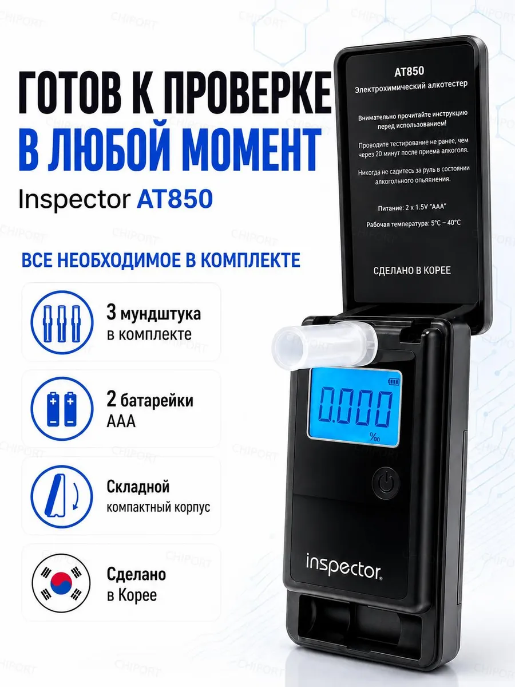
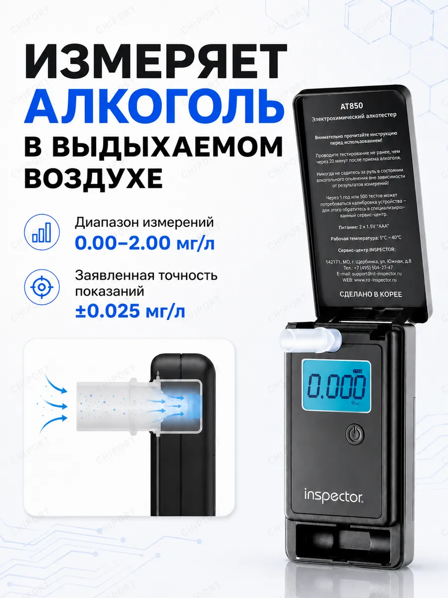
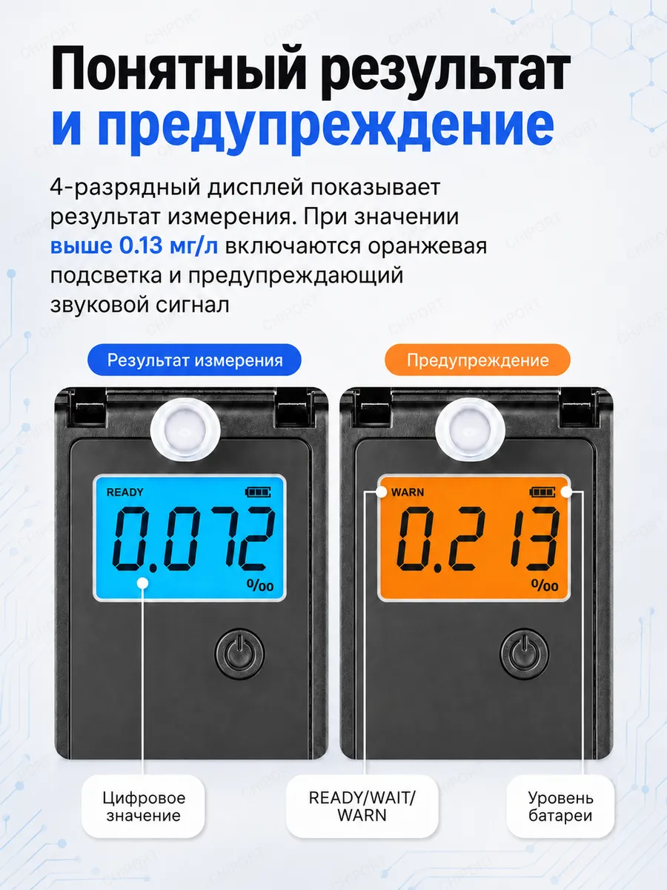
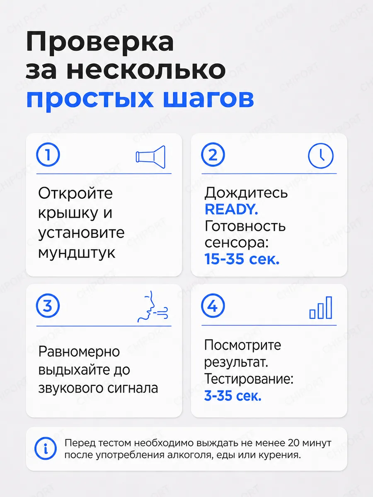
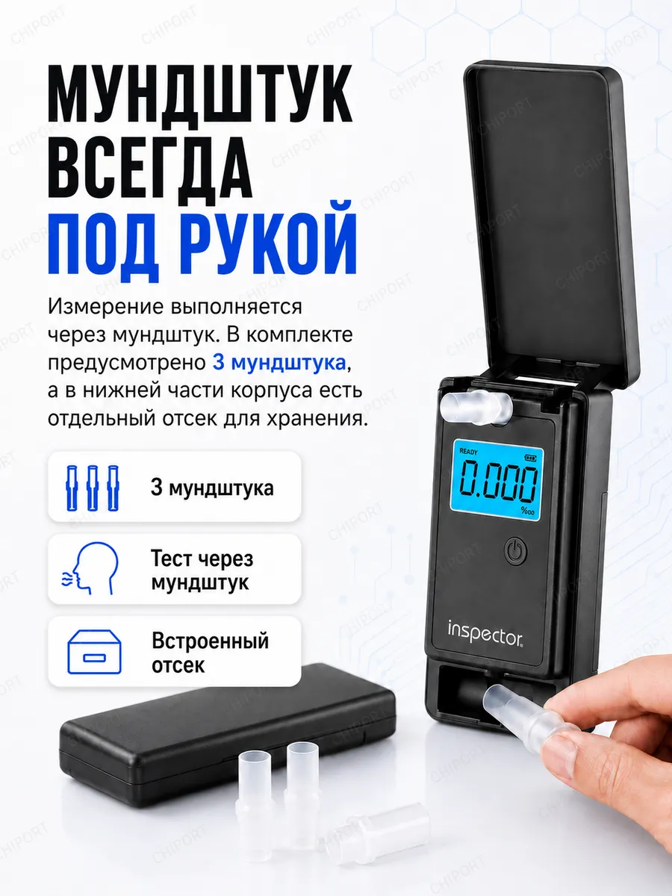
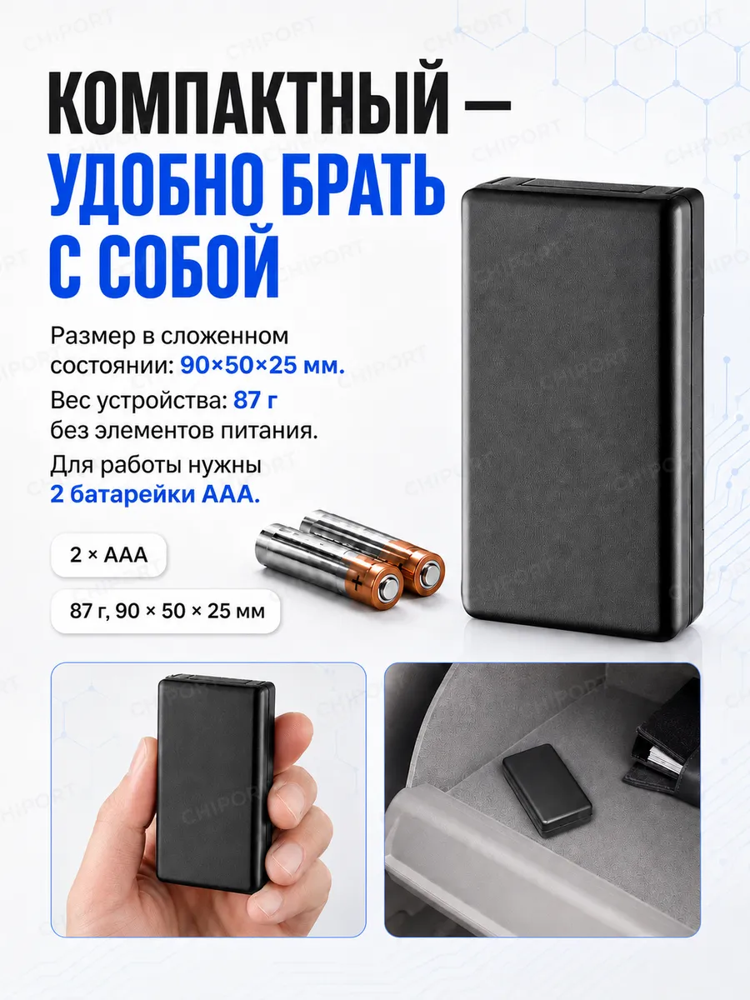
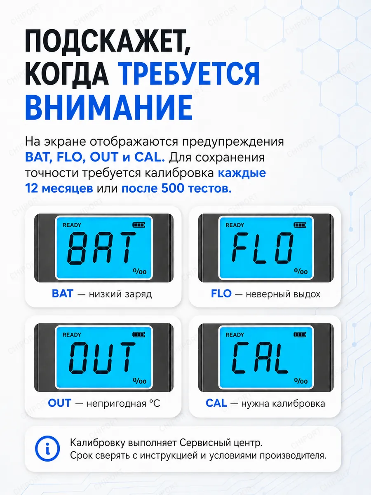
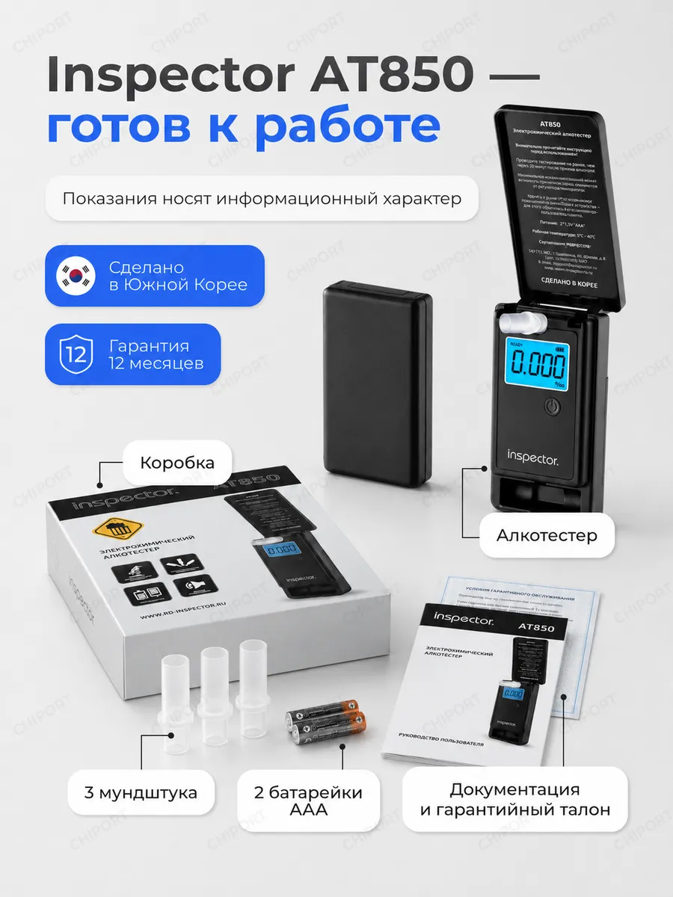

Алкотестер Inspector AT850 отвечает на главный вопрос утра. Дома, до выезда, а не на посту ДПС. Ощущения врут, прибор говорит цифрой.

Ощущения врут: «вроде норм» и превышение выглядят одинаково. Разницу видно только на экране.
Электрохимический сенсор реагирует именно на этанол, а не на «что-то в воздухе». Поэтому его показаниям можно верить, а не пересдавать тест по три раза, гадая, что сработало.

Четырёхразрядный дисплей показывает результат измерения. Если значение выше 0.13 мг/л, подсветка становится оранжевой и включается предупреждающий звуковой сигнал — не нужно вглядываться в цифры и вспоминать нормы.

Перед тестом нужно выждать не менее 20 минут после употребления алкоголя, еды или курения — иначе прибор измерит остатки во рту, а не в лёгких.

Измерение выполняется через мундштук. В комплекте их три, а в нижней части корпуса есть отдельный отсек для хранения — не придётся искать их по бардачку в самый нужный момент.

В сложенном виде — 90 × 50 × 25 мм и 87 граммов без батареек. Прибор живёт в бардачке или в кармане куртки и не занимает места, а работает от двух обычных пальчиковых батареек, которые продаются в любом магазине у дома.

Прибор не молчит, если что-то пошло не так: вместо цифры на экране появляется короткий код, по которому сразу понятно, что делать.
Для сохранения точности калибровка требуется каждые 12 месяцев или после 500 тестов. Выполняет её сервисный центр; срок сверяйте с инструкцией и условиями производителя.


Одна поездка на такси стоит дороже сомнений. Один AT850 закрывает вопрос на годы вперёд.